Brand Identity
Take the dense topic. Hand back the clear version.
The identity behind this site: the idea, the wordmark, the type, and the color that make every page read as one voice. The Design System documents the code. This page documents the thinking.
Decide what's true, then cut the rest.
Every piece of content on this site starts as something too complicated for the person reading it: a legal clause, a procurement process, a compliance requirement nobody wrote in plain words.
The job is deciding what's true, then cutting everything that's only there to sound careful. Hand back something someone can act on without a second read. The wordmark, the type, and the color are all built around that one move.
A lowercase name with a clear a and q.
The wordmark is lowercase, bold and approachable, with a clean sans serif character. The a is a clearly readable double-storey form, and the q has a straight right-hand descender.
Charcoal on ivory is the primary version. Ivory reverses out on charcoal. The wordmark is supplied as outlined vector files, so it needs no installed font and is never retyped.


The wordmark leads, the name follows.
The wordmark leads. Where a full name helps, Tyler Quackenbush sits beneath it in Plus Jakarta Sans semibold, as in the footer of this site.
Tyler QuackenbushOne letter, readable small.
The favicon is a standalone q on a charcoal tile, used in browser tabs and small interface elements. It comes as an SVG, a multi-size ICO file, and PNGs.
Charcoal, ivory, and one accent.
Three colors. Charcoal carries the text and the logo, ivory is the page, and cobalt is the one accent. Every other tone is charcoal at a lower opacity. Earlier explorations in navy, teal, chartreuse, aubergine and espresso were set aside.
Charcoal · #292929
Primary text, the logo, outlines, and dark result bands.
Warm ivory · #F7F4ED
The page background, and the text color on charcoal.
Cobalt · #315BDB
Links, selective headline emphasis, small section markers, and interactive accents.
| Pairing | Ratio | Used for |
|---|---|---|
| Charcoal on ivory | 13.24:1 | Headings and primary text |
| Charcoal at 82% on ivory | 7.59:1 | Body copy |
| Charcoal at 72% on ivory | 5.55:1 | Labels and captions |
| Cobalt on ivory | 5.24:1 | Links and emphasis |
| Ivory on charcoal | 13.24:1 | Result bands |
| Ivory at 78% on charcoal | 8.63:1 | Secondary text on dark |
| Ivory on cobalt | 5.24:1 | Button hover |
| Cobalt on charcoal | 2.53:1 | Text on charcoal uses ivory |
One family, four weights.
One geometric sans serif, Plus Jakarta Sans, sets all the text in four weights. It is licensed under the SIL Open Font License.
Aa Gg Hh 0123
800 · Headings
Aa Gg Hh 0123
700 · Subheadings and buttons
Aa Gg Hh 0123
600 · Navigation and labels
Aa Gg Hh 0123
400 · Body copy
Plain language, plainly presented.
Tyler is the person a team hands the sentence nobody else wants to touch, and it comes back clearer.
A brand about plain language explains itself. The lowercase wordmark is friendly, charcoal on ivory is calm, and cobalt, the one accent, appears only on links and a few emphasized phrases. A TQ monogram and a duck were explored and set aside.